Ruedas y abanicos
Cuando un abanico se puede desplegar en su totalidad de tal forma en la que los extremos en donde se encuentra la primer y última varilla se unen, se forma una rueda. Reciprocamente, cuando a una rueda la desconectamos, entre los rayos que van del centro a la circunferencia se puede elegir uno inicial y uno terminal y formar así un abanico.
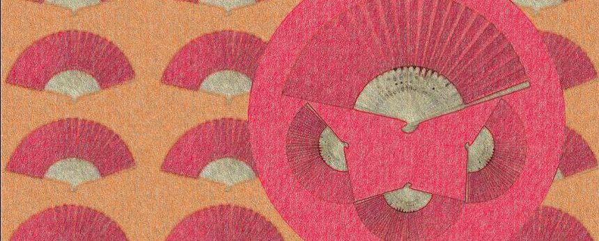
Utilizando esta propiedad, el principio de recursión matemática y la teoría de gráficas, podemos contar el número de árboles generadores de una rueda con un número N de rayos y el de un abanico con N varillas. Pero espera, ¿qué es un árbol generador? Y, ¿cuál es el principio de recursión matemática que se puede usar para contarlos?
Recordemos que la recursión matemática es aquella que nos permite calcular los términos de una sucesión en función de los términos anteriores de esta misma sucesión. Por ejemplo, si el n-ésimo término de una sucesión es la suma de todos los términos anteriores y el primer término es 1, entonces la sucesión obtenida es 1, 1, 2, 4, 8, 16,...
Probablemente la sucesión más conocida obtenida de esta forma es la de los números de Fibonacci, en ella, el n-ésimo término de la sucesión es la suma de los dos términos inmediato anteriores. Además es importante definir los términos iniciales, en este caso los primeros dos términos son iguales a 1. El resto se puede calcular con la regla de recursión ya mencionada.
Cambiando los términos iniciales se obtiene una sucesión diferente. Por ejemplo, la sucesión obtenida de considerar los primeros dos términos iniciales iguales a 2 y a 1, pero con la misma regla de recursión, da lugar a los números de Lucas.
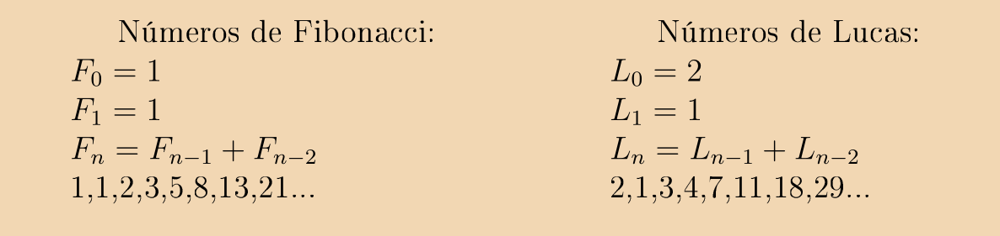
Volviendo a las ruedas, los abanicos, y sus árboles generadores; en la teoría de gráficas, un árbol es aquel que es conexo y sin ciclos. Es generador cuando contiene a todos los nodos.
Pensaremos en una rueda de N rayos como aquella gráfica que resulta de tomar un ciclo con N nodos y un nodo adicional en el centro del cual surgen los rayos hacia el ciclo. Similarmente, un abanico con N varillas es la gráfica que resulta de tomar una trayectoria con N nodos y un nodo adicional en el cual inciden las varillas que van a cada nodo de la trayectoria.
Entonces, encontrar un árbol generador de una rueda o de un abanico sería como encontrar una especie de esqueleto en donde todos los nodos estén conectados, pero en donde no se forma ningún ciclo.
En la siguiente imagen mostramos en verde 3 árboles generadores distintos de una rueda con 5 rayos y 3 árboles generadores distintos del abanico con 6 varillas. Por supuesto que hay muchos más que los aquí mostrados.
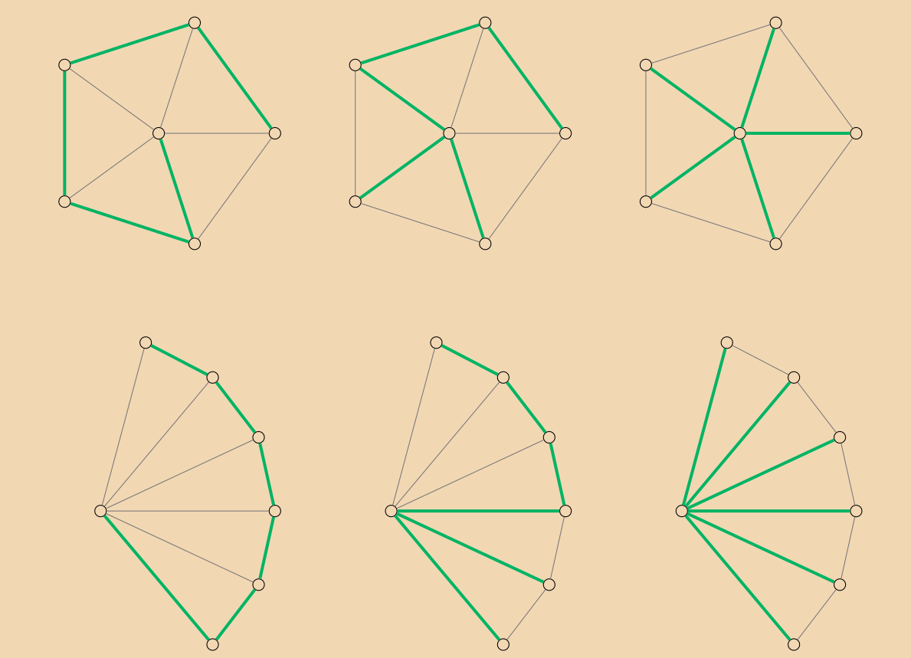
Ahora bien, para contar los árboles generadores de una gráfica, podemos emplear una técnica que divide a los árboles en dos conjuntos: Uno en donde están todos los que tienen a una arista fija y en otro, todos aquellos que no la tienen. Luego hay que notar que el número de árboles generadores de una gráfica que contienen una arista fija, es el mismo que el número de árboles generadores de la gráfica que resulta de contraer esta arista, es decir, de identificar los dos nodos que son los extremos de la arista. Para ilustrar esta técnica para contar árboles generadores, contemos los de la siguiente gráfica con forma de moño, eligiendo como arista fija aquella que une a los dos nodos no centrales del triangulo derecho del moño y a los cuales llamaremos u y v.
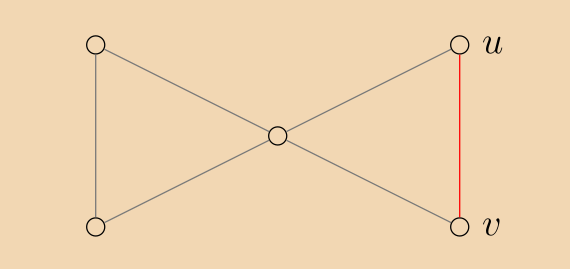
Encontrar el número de árboles generadores de esta gráfica es igual a sumar el número de los árboles generadores de las siguientes dos gráficas:
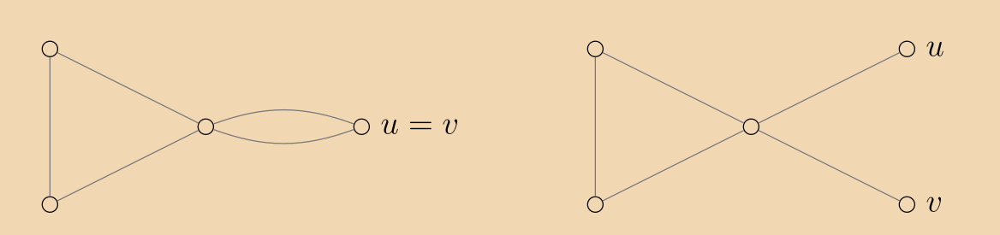
Para la primera gráfica; en esta, se identificaron los vértices u y v y se formó un ciclo de aristas paralelas. Podemos elegir unicamente una de estas dos aristas para evitar la formación de un ciclo y hay 3 posibles elecciones de un árbol generador del triángulo izquierdo. Concluimos que en total hay 6 posibles elecciones para esta gráfica. Uno de ellos es, por ejemplo, el mostrado en la siguiente imagen:
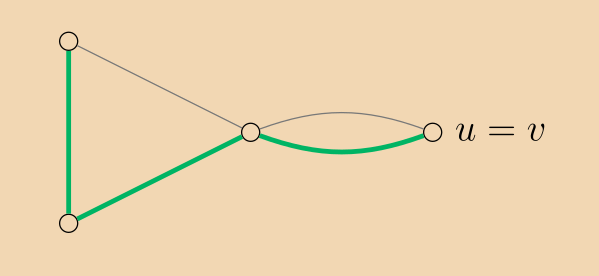
Para la segunda; dado que para conectar a los nodos u y v hay que utilizar la única arista que incide en cada uno de ellos, tenemos que hay 3 árboles generadores para esta gráfica, uno por cada árbol generador del triángulo izquierdo. Uno de ellos puede ser el siguiente:
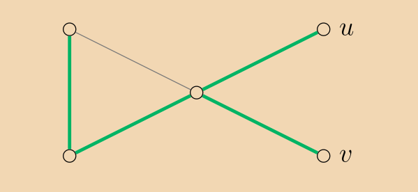
Empleando la técnica para contar los árboles generadores obtenemos que el moño tiene en total 3+6=9 de ellos.
Utilizando la técnica mencionada anteriormente, pero para contar el número de árboles generadores de un abanico con N varillas, elijamos como arista fija la primera de las varillas del abanico. Entonces hay que contar el número de árboles generadores de la primera y segunda gráfica.
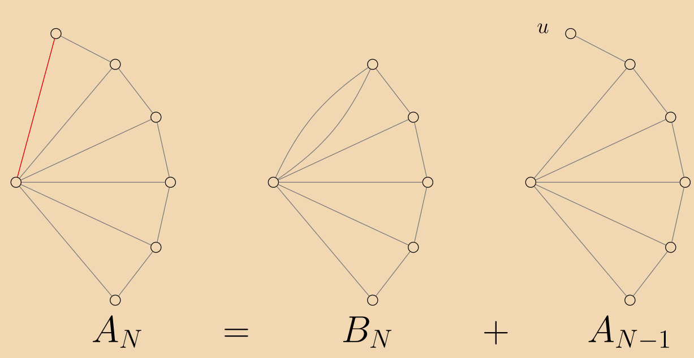
Llamemos AN al número de árboles generadores de un abanico con N varillas y BN al número de árboles generadores de un abanico con N varillas, pero en donde las primeras dos de ellas son paralelas, como en la segunda gráfica de la imagen anterior.
En la tercera gráfica hay que incluir forzosamente a la arista que incide en u, y para el resto de los nodos basta con elegir un árbol generador del abanico con N-1 varillas que quedó. Esta oservación nos dice que el número de árboles generadores de la tercera gráfica es igual al número de árboles generadores de un abanico con N-1 varillas, que es AN-1.
Concluimos que AN=BN+AN-1.
Ahora, empleando nuevamente la técnica para contar nuestros árboles pero en la segunda gráfica, elegiendo una de las varillas paralelas como arista fija, obtenemos que ahora, una de las gráficas es simplemente un abanico con N-1 varillas y por lo tanto tiene AN-1 árboles generadores y la otra, al contraer la varilla paralela, desaparecen ambas para dar lugar a otro par de varillas paralelas. Al tener un varilla menos, esta gráfica tiene BN-1 árboles generadores. Así BN=BN-1+AN-1.
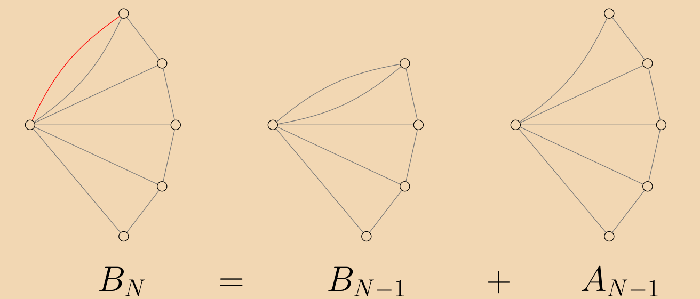
De la misma forma que con el abanico de N varillas, al emplear nuestra técnica de conteo con un abanico de N-1 varillas, obtenemos que AN-1=BN-1+AN-1, despejando BN-1 y sustituyendo en la ecuación anterior obtenemos que BN=2AN-1-AN-2. Finalmente al sustituir B_N en la primera ecuación se llega a que AN=3AN-1-AN-2
Sorprendentemente, esta misma es la regla de recursión de los terminos impares de la sucesión de Fibonacci y con los mismos valores iniciales. Lo que quiere decir que la sucesión de los números de árboles generadores de los abanicos es la sucesión recursiva de los terminos impares de la sucesión de Fibonacci.
¿Qué podemos decir de las ruedas? Supongamos que RN es el número de árboles generadores de una rueda con N rayos y consideremos una arista fija en el ciclo de la rueda. Notemos que el número de árboles generadores que no tienen a esta arista es el número de árboles generadores de un abanico de N rayos, es decir AN. Sea S el número de árboles generadores que sí contienen a la arista fija.
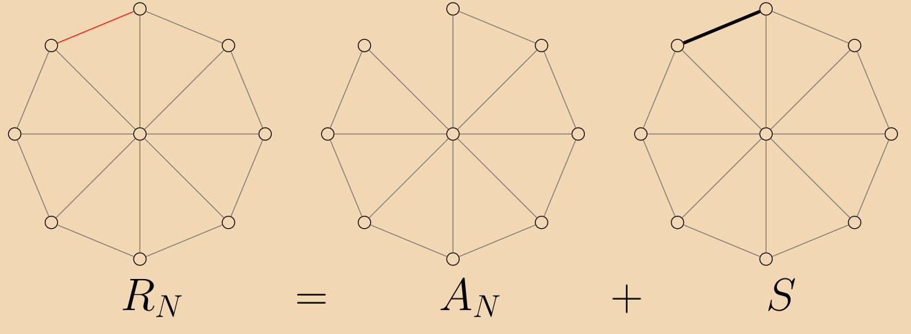
Para encontrar S haremos las siguientes definiciones y observaciones. Llamemos TN al número de árboles generadores de una rueda con N rayos que contienen un rayo fijo y TN al número de árboles generadores que no lo contienen.
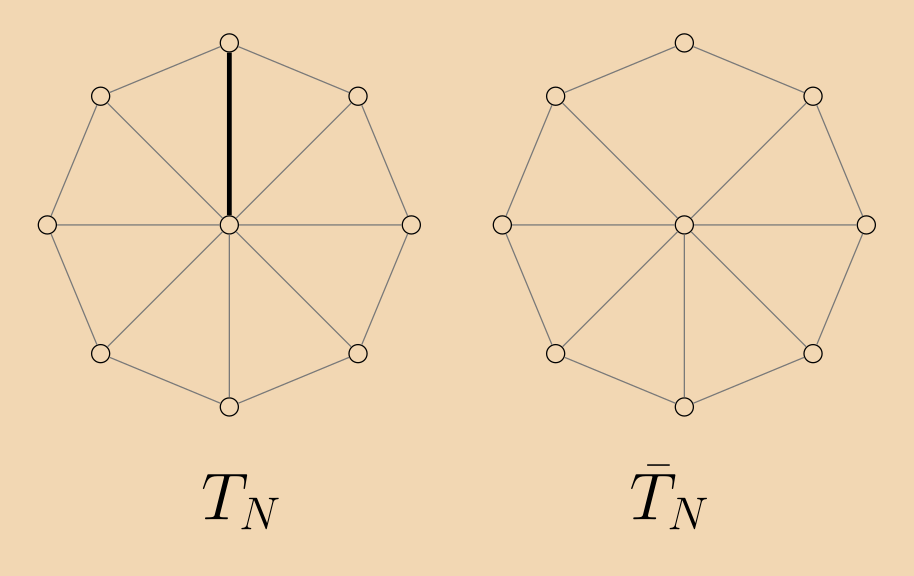
Primero hay que notar que TN es igual a AN. Esta observación se deduce de que podemos dividir a los AN árboles generadores de un abanico entre los que contienen a la varilla inicial y aquellos que no. De la misma forma, de los TN árboles generadores que contienen al rayo fijo, podemos dividirlos entre los que contienen a una arista incidente en el rayo y a los que no.
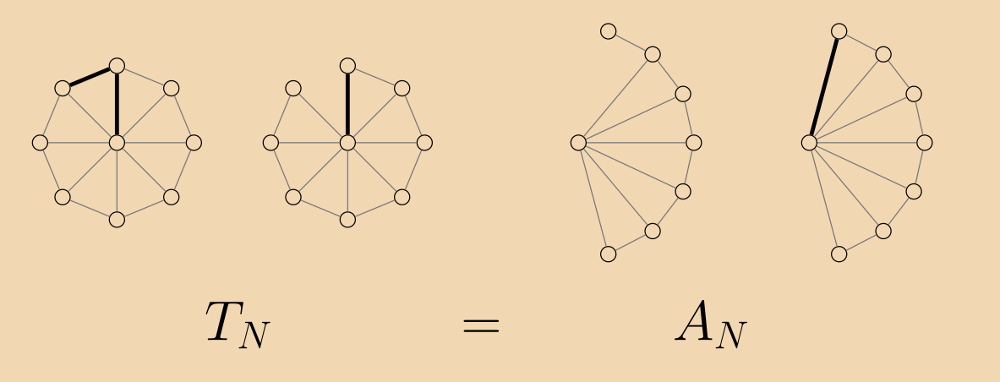
Volviendo a S. Notemos que hay dos rayos que inciden con la arista fija elegida, digamos r1 y r2. Como en un árbol generador no hay ciclos, estos solo pueden contener simultáneamente uno de los dos rayos. Podemos entonces dividir a los árboles generadores en los que contienen a r1, los que contienen a r2 y a los que no contienen a ninguno de los dos. Si llamamos a la cantidad de estos árboles generadores como Sr1, Sr2 y S-{r_1,r_2}, respectivamente, entonces tenemos que S=Sr1+Sr2+S-{r_1,r_2}.
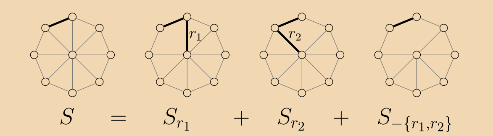
No es muy difícil observar que el número de árboles generadores de la rueda de N rayos que contienen a la arista fija y al rayo r1 es igual TN-1. Es decir Sr1=TN-1. Similarmente Sr2=TN-1
De la misma forma se puede observar que el número de árboles generadores de la rueda que contienen a la arista fija, pero a ninguno de los rayos r1 ni r2 es igual el número de árboles generadores de una rueda con N-1 rayos que no contiene a un rayo fijo, es decir S-{r_1,r_2}=TN-1.
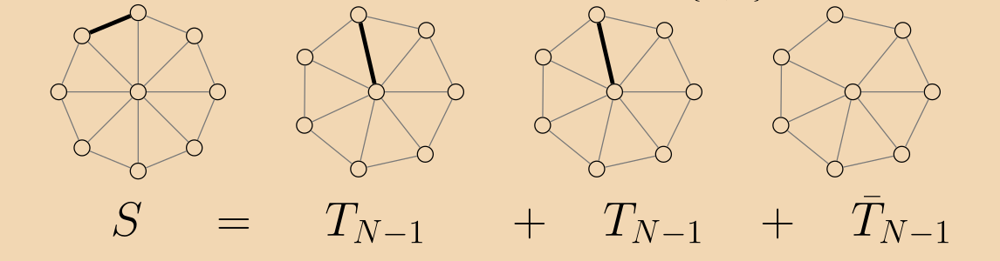
Finalmente, es claro que TN-1+TN-1=RN-1, pues podemos dividir a los árboles generadores entre los que contienen al rayo fijo y a los que no. Sutituyendo S en RN=AN+S obtenemos que RN=AN+AN-1+RN-1
Utilizando esta fórmula y la ya obtenida para los abanicos que dice que AN=F2N-1, se puede demostrar utilizando un argumento inductivo que RN=F2N+1-F2N-3-2. Sabiendo que F2N+1-F2N-3=L2N podemos llegar a que RN=3RN-1-RN-2+6 y a que esta es la misma regla de recursión que la de los términos pares de la sucesión de Lucas recorrida dos unidades negativamente. Es decir RN=L2N-2.